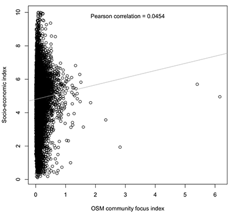
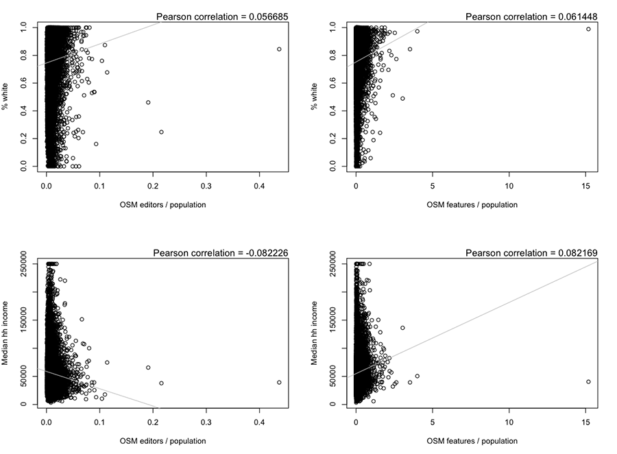
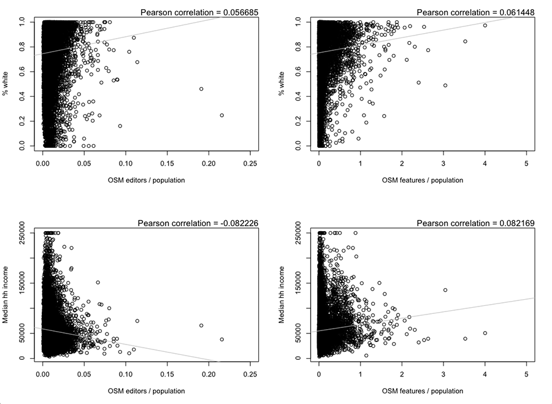

OpenStreetMap (OSM) is an open, editable "map" (or rather, spatial database) of the world being created by volunteers. Features in the database are defined by nodes, ways, and relations with accompanying key-value tags describing the attributes. The global community surrounding the project has made strides forward in terms of welcoming and encouraging minorities and underrepresented groups; however, past and current barriers to entry and participation are very real. Does the map data itself reflect the barriers to editing and participation in OSM in a biased focus on socio-economically advantaged areas?
This project will begin to explore how the social and economic conditions of a given area affect the level of mapping focus it receives. The amount of mapping focus will be measured by the number of editors and the number of map features. Socio-economic condition of an area will be measured by percentage of the population that identifies as white and median household income.
OSM data is easily accessible and there are multiple sources for a complete dump of the OSM database. However, this project is only concerned with areas inside the boundaries of the United States so will use the regular extracts of various geographic regions provided via Geofabrik’s free download server as *.osm.pbf format files. The focus of the project will be constrained to Texas in order to limit the time and resources required for processing while defining the process.
The US Census Bureau collects a variety of socio-economic data through the American Community Survey (ACS) and publishes a comprehensive data release every 5 years with much of the data available down to block group. The most recent 5-year release was in 2014. The Census FTP service provides the TIGER geometries of census blocks and tables of ACS data and the two are easily joined.
The US Census Bureau has made available a geodatabase of 2014 TIGER/Line Shapefiles and data from the 2010-2014 American Community Survey (ACS) 5-year estimates. Since it was the most recent release and was easily downloaded via the Census FTP site (ftp://ftp.census.gov/geo/tiger/TIGER_DP/2014ACS/ACS_2014_5YR_BG.gdb.zip), it was used for this project.
I used PostgreSQL with PostGIS for the spatial analysis and R for the statistcal analysis.
Of the ACS data, this project only uses two tables.
| File ID | Table ID | Table title |
|---|---|---|
| ACSSF | B19013 | Median household income in the past 12 months (in 2014 Inflation-adjusted dollars) |
| ACSSF | C02003 | Detailed race |
I accessed the geodatabase using ESRI ArcGIS. GDAL ogr2ogr is able to load a geodatabase directly into PostGIS if ESRI software is not available. The geodatabase had the block group geometry and also a series of tables. The two relevant tables were joined to the geometry using the GEOID and then all but the relevant columns deleted. The retained columns were B19013e1 (median hh income), C02003e1 (total population), and C02003e3 (white population). The data was then saved out as a shapefile.
For later steps to work I needed to update my installations of PostgreSQL, PostGIS, and pgAdmin3 to 9.5.2, 2.2.2, and 1.22.1 respectively. I started the server, then setup the database. The hstore extension is necessary for storing the key/value pairs that describe OSM features.
pg_ctl -D /usr/local/var/postgres -l /usr/local/var/postgres/server.log start createdb bg_texas psql -c "CREATE EXTENSION postgis; CREATE EXTENSION postgis_topology; CREATE EXTENSION hstore;" bg_texas
I then added the block group spatial data.
ogr2ogr -update -append -f PostgreSQL PG:"dbname=bg_texas user=danbjoseph password=" bg_texas.shp -nlt MULTIPOLYGON25D -nln bg -progress
Add then added the OSM data from the extract. In the custom.style file I set it to include the username of the most recent editor of the feature.
osm2pgsql --database bg_texas --create --slim --drop --latlong --multi-geometry -j --extra-attributes --style /Users/danbjoseph/Desktop/texas/custom.style /Users/danbjoseph/Desktop/texas/texas-latest.osm.pbf # Osm2pgsql took 2323s overall
The above resulted in tables for line, point, and polygon features. The options I set for the import meant that the point table contained all nodes, including those that were part of other features, and not just those nodes that represented distinct features. To counter this, I tallied the number of tags on each point and deleted those that had only the three metadata tags (and no additional information on a feature).
ALTER TABLE planet_osm_point ADD COLUMN num_keys integer; UPDATE planet_osm_point SET num_keys = ( SELECT array_length(akeys(tags), 1) ); # Query returned successfully: 26822145 rows affected, 12:19 minutes execution time. DELETE FROM planet_osm_point WHERE num_keys<=4; # Query returned successfully: 26268666 rows affected, 01:37 minutes execution time.
The following SQL query was used to calculate the unique number of contributing OSM editors per block group and add the counts to the table. Community guidelines ask users conducting imports to use a dedicated account with import in the username. Those features, as well as features tagged tiger:reviewed=no were removed from the count.
ALTER TABLE bg ADD COLUMN osm_editors integer;
UPDATE bg
SET osm_editors = (
SELECT COUNT(*) FROM(
SELECT osm_user FROM planet_osm_line WHERE ST_Intersects(way, bg.wkb_geometry) AND NOT (osm_user LIKE '%import%') AND ("tiger:reviewed"!='no' OR "tiger:reviewed" IS NULL)
UNION
SELECT osm_user FROM planet_osm_polygon WHERE ST_Intersects(way, bg.wkb_geometry) AND NOT (osm_user LIKE '%import%') AND ("tiger:reviewed"!='no' OR "tiger:reviewed" IS NULL)
UNION
SELECT osm_user FROM planet_osm_point WHERE ST_Intersects(way, bg.wkb_geometry) AND NOT (osm_user LIKE '%import%') AND ("tiger:reviewed"!='no' OR "tiger:reviewed" IS NULL)
) AS users
);
# Query returned successfully: 15811 rows affected, 09:48 minutes execution time.
The following SQL query was used to get the combined count of point, polygon, and line OSM features per block group and add the counts to the table.
ALTER TABLE bg ADD COLUMN osm_features integer;
UPDATE bg
SET osm_features = (
SELECT COUNT(*) FROM(
SELECT osm_id FROM planet_osm_line WHERE ST_Intersects(way, bg.wkb_geometry) AND NOT (osm_user LIKE '%import%') AND ("tiger:reviewed"!='no' OR "tiger:reviewed" IS NULL)
UNION
SELECT osm_id FROM planet_osm_polygon WHERE ST_Intersects(way, bg.wkb_geometry) AND NOT (osm_user LIKE '%import%') AND ("tiger:reviewed"!='no' OR "tiger:reviewed" IS NULL)
UNION
SELECT osm_id FROM planet_osm_point WHERE ST_Intersects(way, bg.wkb_geometry) AND NOT (osm_user LIKE '%import%') AND ("tiger:reviewed"!='no' OR "tiger:reviewed" IS NULL)
) AS features
);
# Query returned successfully: 15811 rows affected, 08:32 minutes execution time.
Having used PostGIS for the intensive geo analyis I then exported back out as a shapefile now with the additional data attributes.
pgsql2shp -f /Users/danbjoseph/Desktop/texas/texasdata.shp -h localhost -u danbjoseph bg_texas "SELECT * FROM bg;"
For each block group I calculated OSM editors per person, OSM features per person, and percentage white population. I also calculated an OSM focus and socio-economic index by scaling the individual attributes to between 0 and 10, adding them, and then dividing by 2 to get back to the 0-10 scale.
I went with CartoDB to map the data. A series of CartoCSS rules allowed a map visualization using value-by-alpha wherein transparency and color value will be used to symbolize the two variables. That is, less transparent census blocks will be areas of more OSM community focus and color hue will denote the level of the socio-economic variable). For a thorough discussion of the technique see:
Roth, R. E., Woodruff, A. W., & Johnson, Z. F. (2010). Value-by-alpha maps: An alternative technique to the cartogram. The Cartographic Journal, 47(2), 130-140.
I also greyed out those with population <=50 and with a 0 value for median income.
#texasdata [ socio_eco <= 10] {
polygon-fill: #54278f;
}
#texasdata [ socio_eco <= 6.780831748] {
polygon-fill: #756bb1;
}
#texasdata [ socio_eco <= 4.977156539] {
polygon-fill: #756bb1;
}
#texasdata [ socio_eco <= 3.591196353] {
polygon-fill: #cbc9e2;
}
#texasdata [ socio_eco <= 2.261882519] {
polygon-fill: #f2f0f7;
}
#texasdata [ osm_index <= 6.160493705] {
polygon-opacity: 1.0;
}
#texasdata [ osm_index <= 0.44739668] {
polygon-opacity: 0.8;
}
#texasdata [ osm_index <= 0.242262185] {
polygon-opacity: 0.6;
}
#texasdata [ osm_index <= 0.120857563] {
polygon-opacity: 0.4;
}
#texasdata [ osm_index <= 0.06609599] {
polygon-opacity: 0.2;
}
#texasdata [ b19013e1 = 0.0] {
polygon-fill: #6d6e70;
polygon-opacity: 0.0;
}
#texasdata [ c02003e1 <= 50] {
polygon-fill: #6d6e70;
polygon-opacity: 0.0;
}
Because I'm primarily interesed in how the population local to an area might be contributing, or affecting, contributions to OSM I cut out areas with population <= 50 and with a 0 value for median income (missing data). I used R to calculate a Pearson correlation coefficient (PCC). And graph a regression line of best fit. As described in R's help:
If method is "pearson", the test statistic is based on Pearson's product moment correlation coefficient cor(x, y) and follows a t distribution with length(x)-2 degrees of freedom if the samples follow independent normal distributions. If there are at least 4 complete pairs of observation, an asymptotic confidence interval is given based on Fisher's Z transform.
field <- read.csv(file.choose())
# use the file picker to select a csv of the data
attach(field)
names(field)
# to check the variable names
plot(osm_index, socio_eco, main="", xlab="OSM community focus index", ylab="Socio-economic index")
cor1 <- paste0("Pearson correlation = ", round(cor(osm_index, socio_eco, method="pearson"),4))
mtext(cor1, 3, line=-2)
abline(lm(socio_eco ~ osm_index), col="grey")
par(mfrow = c(2, 2))
plot(editor_per, percwhite, main="", xlab="OSM editors / population", ylab="% white", xlim=c(0, 0.25))
cor1 <- paste0("Pearson correlation = ", round(cor(editor_per, percwhite, method="pearson"),6))
mtext(cor1, 3, adj=1)
abline(lm(percwhite ~ editor_per), col="grey")
plot(featur_per, percwhite, main="", xlab="OSM features / population", ylab="% white", xlim=c(0, 5.0))
cor2 <- paste0("Pearson correlation = ", round(cor(featur_per, percwhite, method="pearson"),6))
mtext(cor2, 3, adj=1)
abline(lm(percwhite ~ featur_per), col="grey")
plot(editor_per, b19013e1, main="", xlab="OSM editors / population", ylab="Median hh income", xlim=c(0, 0.25))
cor3 <- paste0("Pearson correlation = ", round(cor(editor_per, b19013e1, method="pearson"),6))
mtext(cor3, 3, adj=1)
abline(lm(b19013e1 ~ editor_per), col="grey")
plot(featur_per, b19013e1, main="", xlab="OSM features / population", ylab="Median hh income", xlim=c(0, 5.0))
cor4 <- paste0("Pearson correlation = ", round(cor(featur_per, b19013e1, method="pearson"),6))
mtext(cor4, 3, adj=1)
abline(lm(b19013e1 ~ featur_per), col="grey")
The following plot is of the complete distribution for for the calculated index measurements of OSM community focus and socio-economic state.
The following plots are of the complete distribution for each combination of measurements of OSM community focus and socio-economic state.
The following plots have had the x axis rescaled to cut out the farthest outliers, so that the distribution of the majority of the points can be more easily observed.
Data that has been incorporated into OSM through a bulk import is not a good indication of community engagement and was filtered out. An import of 2005 TIGER/Line data occurred for the entire US. All the roads added via the import were tagged tiger:reviewed=no and ways with that tag were filtered out of the analysis. Additionally, community guidelines ask users conducting imports to use a dedicated account with 'import' in the username and these features were also filtered out.
Looking at the various information products there is no clear relation that junmps out. The maps showing individual variable combinations all seem to display areas with all possible combinations of high or low socio-economic measure and high or low OSM community focus measure.
The Pearson correlation coefficient (PCC) is positive for three of the four variable pairs. The value can range from -1 to 1, and in all four cases it is only a small way from zero.
The main index map has some areas that seem like they might be affected by conditions not considered in this analysis. Along the border at the most Southern tip of Texas is an area of low OSM community focus despite being populated and what appears to be moderate to high socio-economic status.
I failed in my initial attempts to process the OSM data for the entire United States. I underestimated the time and the hardware setup required.
It might be interesting to focus on a single city. The areas of Houston, San Antonio, and Austin all had an interesting patchwork in the maps. A more focused area of interest would allow for more in depth and localized analysis.
I didn't consider the actual tags on features. How might the types of tags reflect the type and level of OSM focus? Are parks, schools, and other public amenities tagged? Are commercial entities tagged? Does the range of tags encompass all the likely features in an area or only a subset of different feature categories?
The American Community Survey includes a wealth of data beyond the 3 attributes used for this analysis. What might be used as a better measure of poverty?
Better filtering of imports could be possible.
This analysis only looked at the most recent editor of a feature. Positively, this meant that imported data since edited by another user was included. However, it means the total unique editors in an area was not accounted for. If a single user went through and added some attribute, such as address, to a large number of buildings in an area it could bring down the count of contributing users. A more detailed analysis might consider the complete history of objects. It could consider all users editing each feature. Or it could consider the version number of features, assuming that a higher version number means a feature has been repeatedly updated.
This analysis doesn't have any temporal considerations. OSM is relatively young, much of the growth in the USA occuring in the last 10 years. In areas of rapid urbanization or gentrification it might be interesting to consider the age of features. When was a feature last edited?
The basic filtering of import data used in this analysis could be made more robust. The OSM-US community keeps track of imports via a listserve and wiki. Community practices entail that imported data occur through dedicated usernames, with specific source tags, or both. Such usernames and source tags are documented on the wiki. The documentation could be manually searched for additional ways to filter the data.
by Dan B Joseph